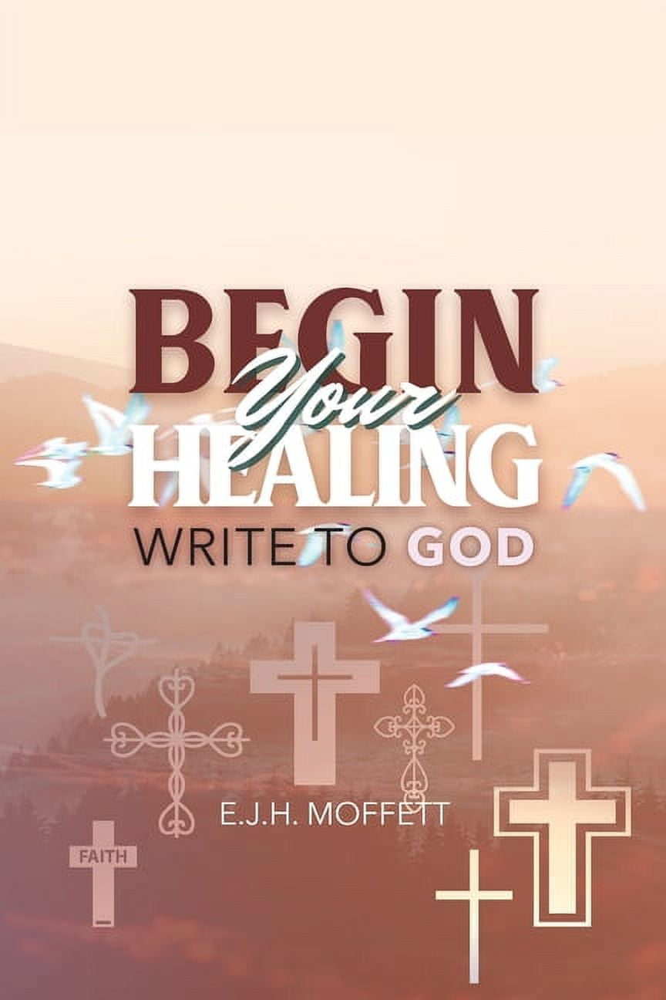
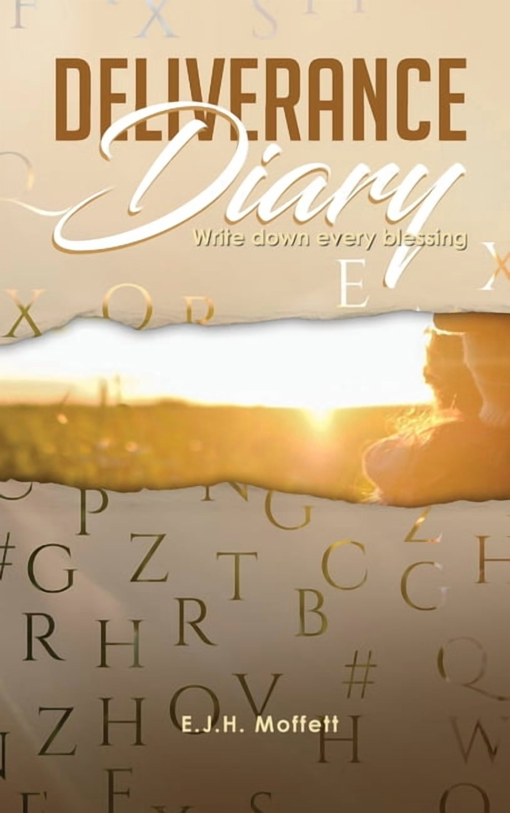

Write to God
Put what is on your heart into words.
The practice in Begin Your HealingWritten prayer & everyday blessings
It can begin
with a letter.

Begin Your Healing
Write to GodE.J.H. Moffett’s invitation to bring the honest, unfinished parts of life to God—on the page.
Explore the journalThe written page
Moffett’s journals make space for both: honest words to God and a written record of blessings. Take these two headings into your own notebook, or print a sheet and begin there.
Put what is on your heart into words.
The practice in Begin Your HealingNotice what you want to remember.
The practice in Deliverance DiaryA writing sheet inspired by the two book subtitles · E.J.H. Moffett · Homepage concept by Astra Productions
A blank page. Your own words.
Begin Your Healing
WRITE TO GODIn Begin Your Healing: Write to God, Moffett brings her own practice of writing prayers into a devotional journal for the reader.
See the book’s editionsThe book addresses difficult experiences, including loneliness and losing a job, and encourages readers to be candid with God about their struggles.
Individual journaling days combine devotional guidance with space to put daily thoughts into letters to God.
Writing becomes a way to attend to a relationship with God. The invitation is to participate, with your own words on the page.
Deliverance Diary
WRITE DOWN EVERY BLESSING
Another reason to open a notebook
Deliverance Diary:
Write Down Every Blessing
This journal turns attention toward the blessings of the present. Its description draws on Ephesians 3:19–21 and invites readers to make a record of what they might otherwise forget.
Where Begin Your Healing makes room for struggle, Deliverance Diary makes room for gratitude. The books offer two different reasons to return to the written page.
Explore the Diary’s editionsThe books, on your shelf
2020 · NEW LEAF MEDIAExplore the edition details at these booksellers. Availability and delivery options vary; check the listing for your location.
Write to God
Write Down Every Blessing